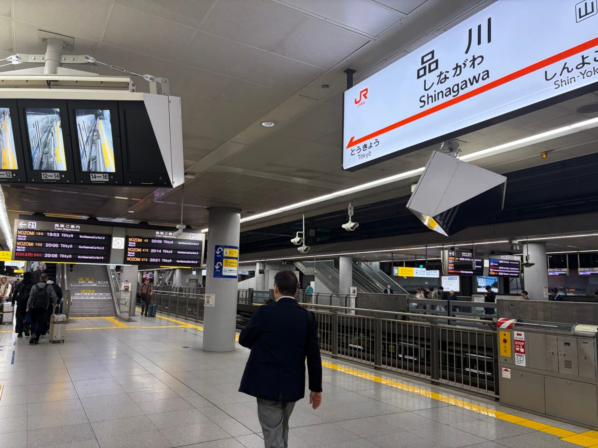
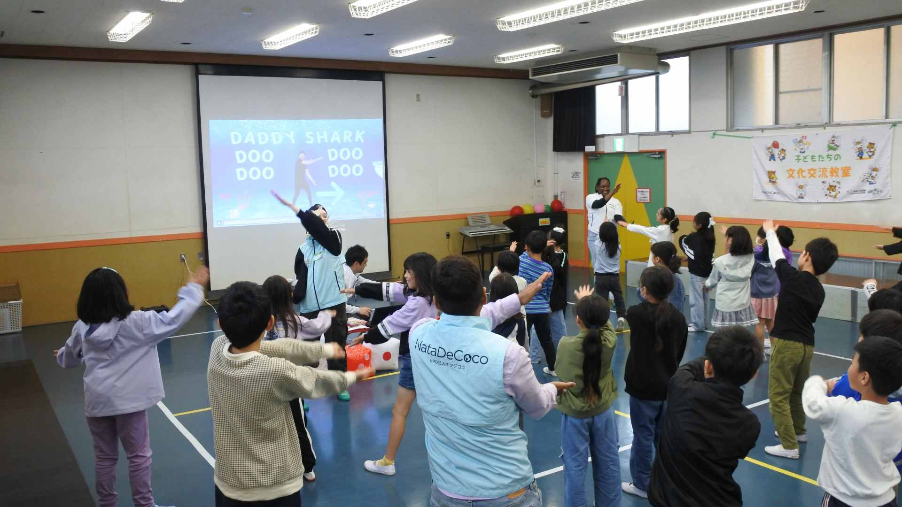
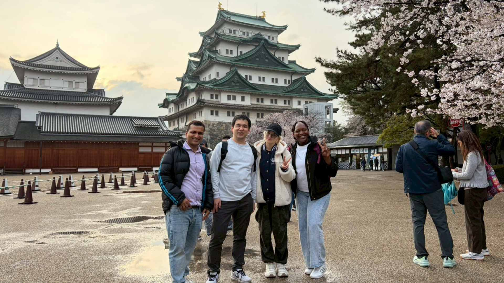

Shota
Shota

朝4時半に起床して新幹線に乗り込む外国人メンバー。愛知・津島の子どもたちとのたった1時間のために、フランス、ウクライナ、ジンバブエ、バングラデシュ、スリランカ――6カ国のメンバーが集結しました。
2025年3月31日、NPO法人ナタデココは愛知県津島市の児童館で出張文化交流教室を開催。本記事では、当日の様子をリポートします。子どもたちの目が輝く瞬間、外国人メンバーが愛知の味に感激する瞬間――読み終わったころには、「次は自分も参加したい」と思っていただければ嬉しいです。
イベント概要
| 開催日時 | 2025年3月31日（月）10:45〜11:45 |
|---|---|
| 会場 | 愛知県津島市 市内児童館 |
| 参加メンバー国籍 | フランス、ウクライナ、ジンバブエ、バングラデシュ（東京）／ スリランカ×2名（名古屋） 計6カ国 |
| 対象 | 児童館に集まる子どもたち（低学年中心） |
| プログラム | 自己紹介・世界クイズ・外国の遊び・世界のダンス・質問コーナー |
朝4時半起床！ 東京チームの「遠征」が始まる
今回の出張教室は、東京と名古屋のメンバーが合流する「遠距離コラボ」です。東京メンバーにとっては、早朝の新幹線が旅のはじまり。一番早い子は朝4時30分に起床したとか。それでも誰一人乗り遅れることなく、名古屋駅で見事に集合を果たしました。
名古屋からは在住のスリランカメンバー2名が合流し、一行は名鉄に乗り換えて津島駅へ。予定どおり9時30分ごろ到着し、現地コーディネーターの方に出迎えていただきました。当日は雨もぱらつくあいにくの天気でしたが、車で会場の児童館まで送っていただき大助かりでした。

子どもたちと一緒に準備！ 会場づくりからイベントが始まる
児童館に到着してまず驚いたのは、子どもたちの協力的な姿勢。イベントで使う風船やサイコロを膨らませる作業を、子どもたちが率先して手伝ってくれました。壁には横断幕も掲示され、会場があっという間ににぎやかな雰囲気に変わっていきます。
ナタデココのメンバーはプログラムの流れを熟知しているため、準備は短時間でスムーズに完了。いよいよ本番の時間です。
スタート！ 6カ国の「好きな食べ物」で距離がぐっと縮まる
名古屋からのスリランカメンバーも合流し、いよいよイベントスタート。参加者は低学年の子どもたちが中心ということで、集中力が持続するよう、テンポよくコンテンツを進めていきます。
まず「自己紹介コーナー」では、外国人メンバーに好きな食べ物を聞きました。すると、「ラーメン！」「天ぷら！」と口々に返ってきます。「えっ、知ってる！」「私も好き！」――国は違っても、好きなものが一緒だと分かった瞬間、子どもたちの表情がほぐれていくのが見えました。
外国人メンバーの「好きな食べ物」
🇫🇷 フランス出身：「ラーメン！クロワッサンより好きかも」
🇺🇦 ウクライナ出身：「お寿司。でも天ぷらうどんも最高です」
🇿🇼 ジンバブエ出身：「たこ焼き！大阪で初めて食べて感動しました」
🇧🇩 バングラデシュ出身：「カレーうどん。バングラデシュのカレーとは全然違う！」
🇱🇰 スリランカ出身：「抹茶アイス。毎日でも食べたいです」

世界クイズで「知らなかった！」が連発 難問にも果敢にチャレンジ
続いては、世界に関するクイズ・ゲームコーナーです。今回は難易度高めの問題を用意しましたが、子どもたちは臆することなく手を挙げてチャレンジ。正解のたびに「やったー！」と歓声が上がり、不正解でも「えーそうなの！？」という驚きの声が教室中に広がります。
クイズは知識を問うだけでなく、「世界ってこんなに面白いんだ」という発見のきっかけになります。子どもたちの目が輝く瞬間です。
体を動かして国際交流！ 外国の遊びと世界のダンスで大盛り上がり
クイズで盛り上がったところで、次はグループに分かれての「外国の遊びコーナー」。アメリカ発祥の「ホット・ポテト・ゲーム」では、音楽に合わせてボールをどんどん回します。音楽が止まったとき持っていた人がアウト！シンプルなルールで言葉の壁はゼロ、笑いだけが飛び交います。
さらにこの日はスペシャルなコーナーが。参加メンバーの中にダンサーがいたことから、「世界のダンス体験」を急遽プログラムに加えました。フィリピン、カメルーン、韓国のダンスを、簡単なステップから順番にチャレンジ。最後は大人向けの本格ダンスまで披露され、子どもも大人も大笑いしながら踊り続けました。

「聞きたいことがある！」 子どもたちから手が止まらない質問コーナー
プログラムの締めくくりは、子どもたちからの質問コーナーです。「最初は恥ずかしいかな？」と思いきや、次々と手が挙がりました。最初はなかなか前に出られなかった子が、最後は自ら大きく手を挙げて質問している姿が印象的でした。
「外国では学校で何を食べるの？」「好きな日本語は何ですか？」「日本に来て困ったことはある？」――子どもたちの質問は、純粋な好奇心と相手への興味に満ちていました。これこそが、ナタデココが大切にしている「異文化への好奇心」の芽吹きです。
振り返りは味噌煮込みうどんで。「地方遠征」の醍醐味
60分のイベントを終え、ナタデココメンバーは津島市内のレストランで振り返りミーティング。「子どもたちが積極的で楽しかった！」「質問コーナーがあんなに盛り上がるとは」という声が続きます。外国人メンバーは味噌煮込みうどんをはじめとした愛知の地元料理を堪能し、「この麺は何だ？！」と大興奮でした。
東京メンバーはその後、名古屋観光へ。熱田神宮と名古屋城を巡り、現地の説明パネルを写真に収めて帰りの新幹線で翻訳しながら読み込む外国人メンバーの姿も。「日本に住んでいるのに名古屋は初めて」というメンバーにとって、この遠征は文字どおりの「日本発見の旅」にもなりました。

地方出張教室が生み出す「双方向のWin」
今回の津島市遠征を通じて、改めて実感したことがあります。地方への出張教室は、地方の子どもたちと外国人が出会う貴重な機会であると同時に、外国人メンバーが日本の地方都市の魅力を発見できる場でもある――まさに双方向のWin-Winプログラムです。
今回参加した6カ国のメンバーをご紹介します。